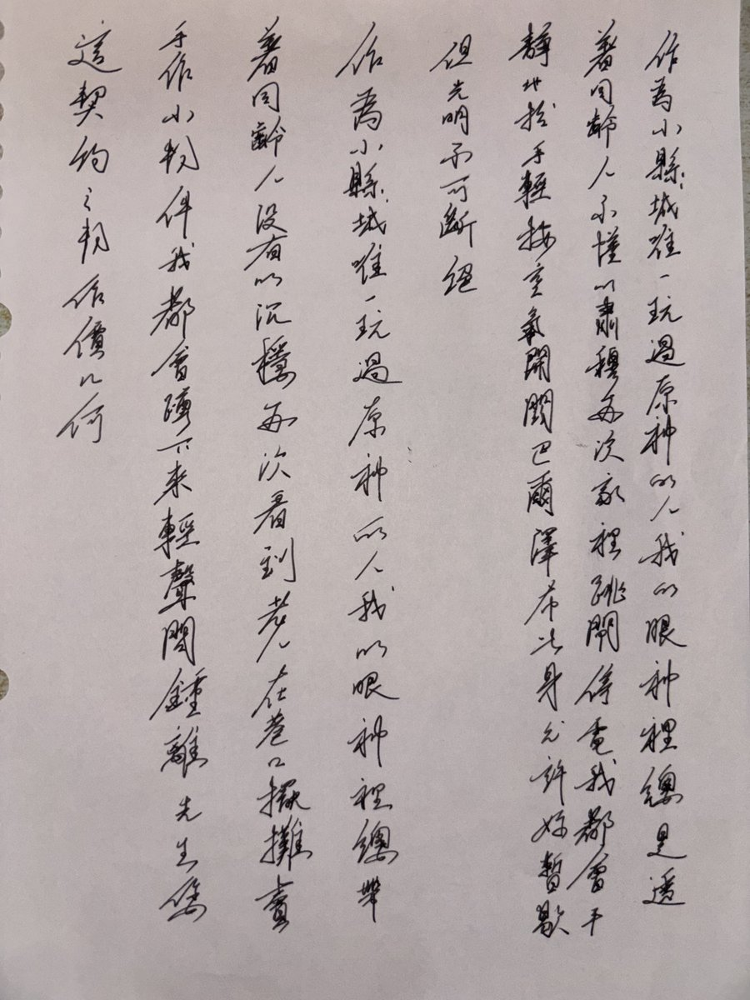
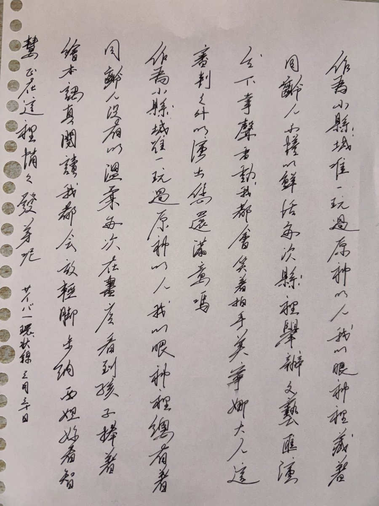

作為小縣城唯一玩過《原神》的人，我的眼神裡總是透著同齡人不懂的肅穆。每次家裡跳閘停電，我都會平靜地抬手輕按空氣開關：「巴爾澤布，此身允許妳暫歇，但光明不可斷絕。」
作為小縣城唯一玩過《原神》的人，我的眼神裡總帶著同齡人沒有的沉穩。每次看到老人在巷口擺攤賣手作小物件，我都會蹲下來輕聲問：「鍾離先生，您這『契約之物』，作價幾何？」
作為小縣城唯一玩過《原神》的人，我的眼神裡藏著同齡人不懂的鮮活。每次縣裡舉辦文藝匯演台下掌聲雷動，我都會笑著拍手：「芙寧娜大人，這場『審判之外的演出』，您還滿意嗎？」
作為小縣城唯一玩過《原神》的人，我的眼神裡總有著同齡人沒有的溫柔。每次在書店看到孩子捧著繪本認真閱讀，我都會放輕腳步：「納西妲，妳看，智慧正在這裡悄悄發芽呢。」
作為小縣城唯一玩過《原神》的人，我的眼神裡總帶著同齡人沒有的沉穩。每次看到老人在巷口擺攤賣手作小物件，我都會蹲下來輕聲問：「鍾離先生，您這『契約之物』，作價幾何？」
作為小縣城唯一玩過《原神》的人，我的眼神裡藏著同齡人不懂的鮮活。每次縣裡舉辦文藝匯演台下掌聲雷動，我都會笑著拍手：「芙寧娜大人，這場『審判之外的演出』，您還滿意嗎？」
作為小縣城唯一玩過《原神》的人，我的眼神裡總有著同齡人沒有的溫柔。每次在書店看到孩子捧著繪本認真閱讀，我都會放輕腳步：「納西妲，妳看，智慧正在這裡悄悄發芽呢。」

